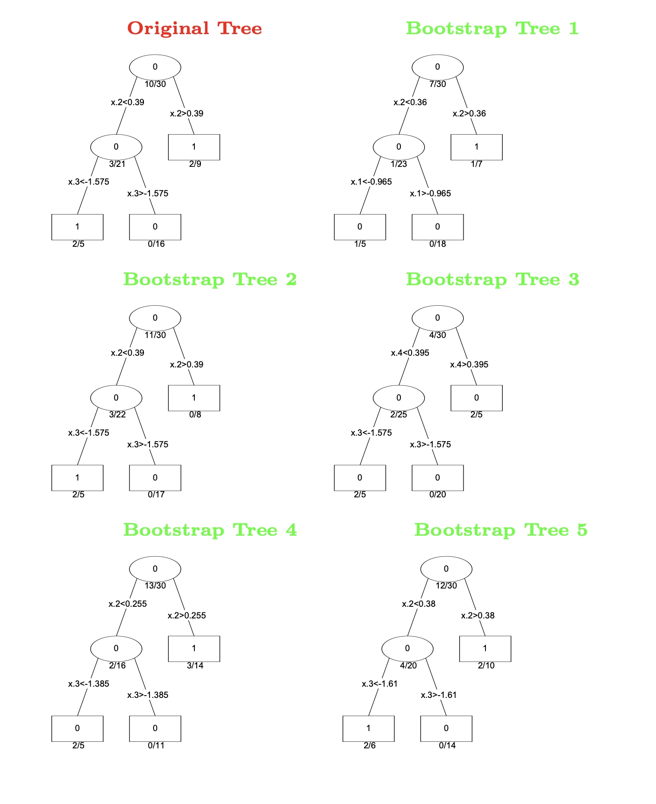
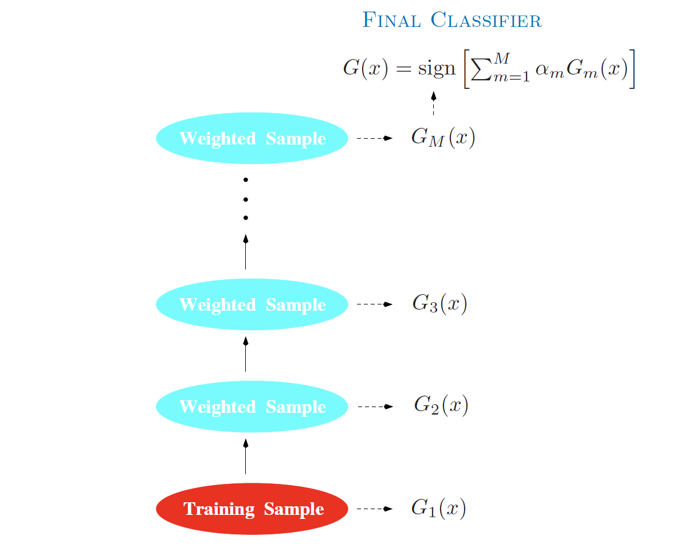
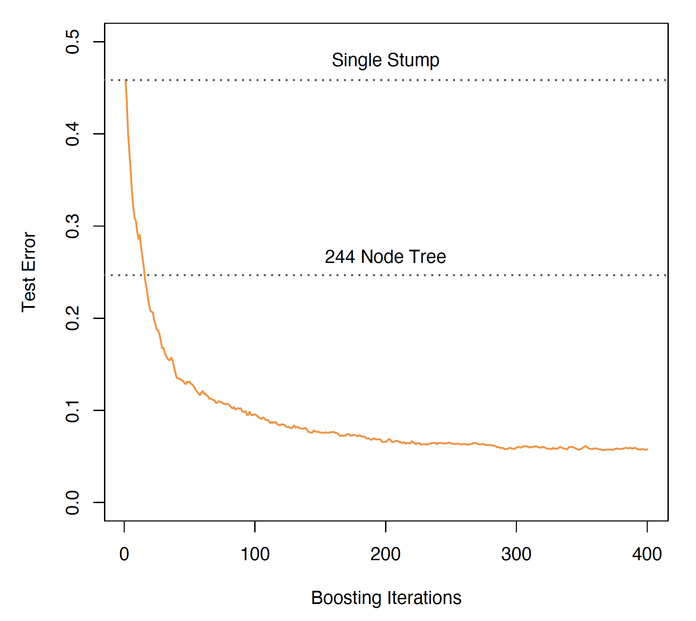
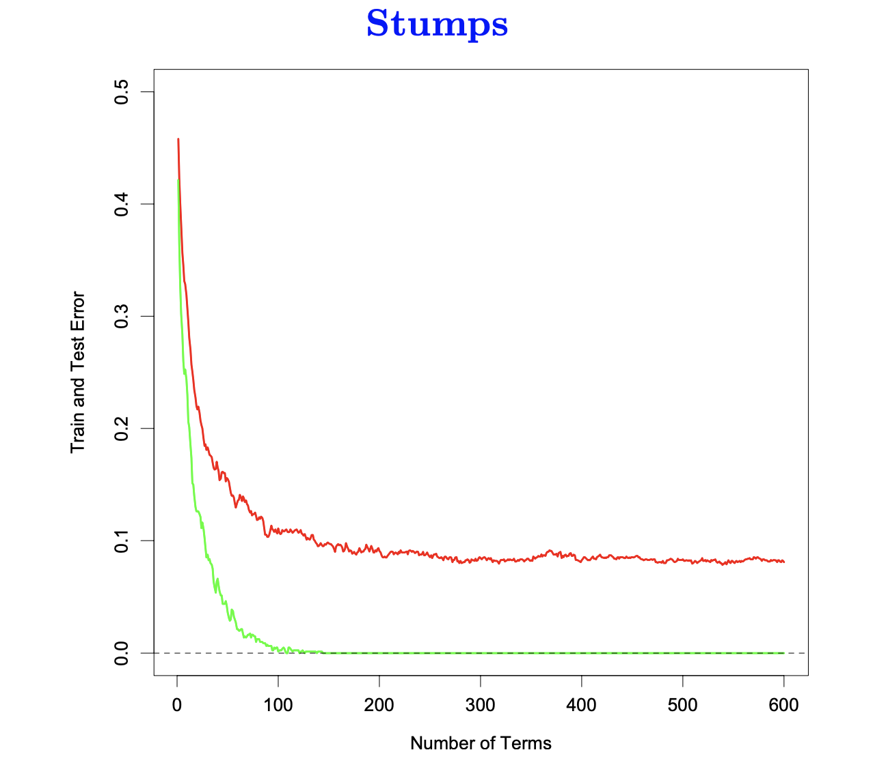
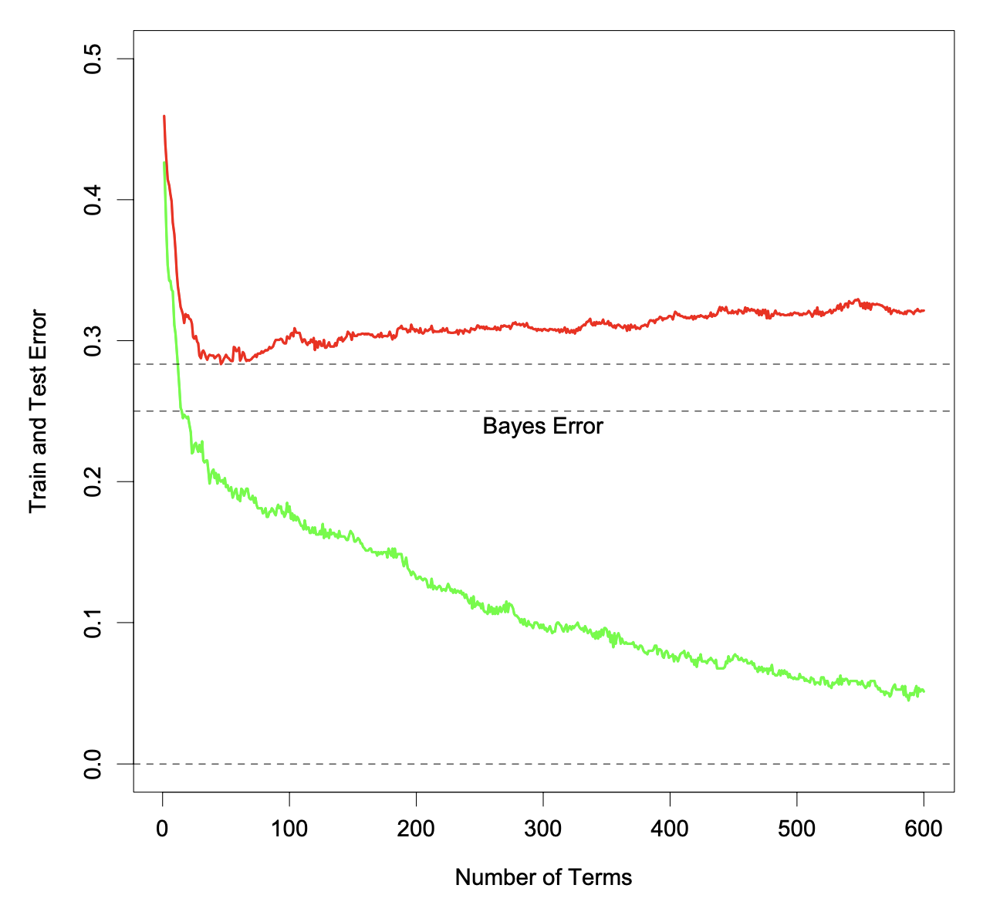
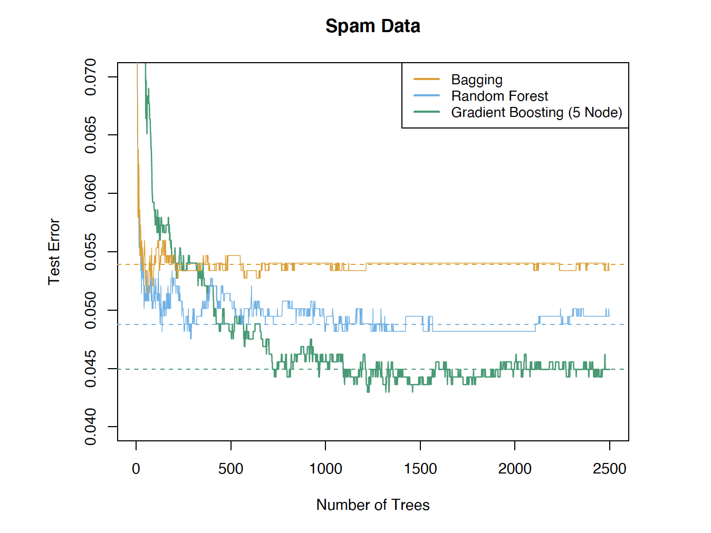
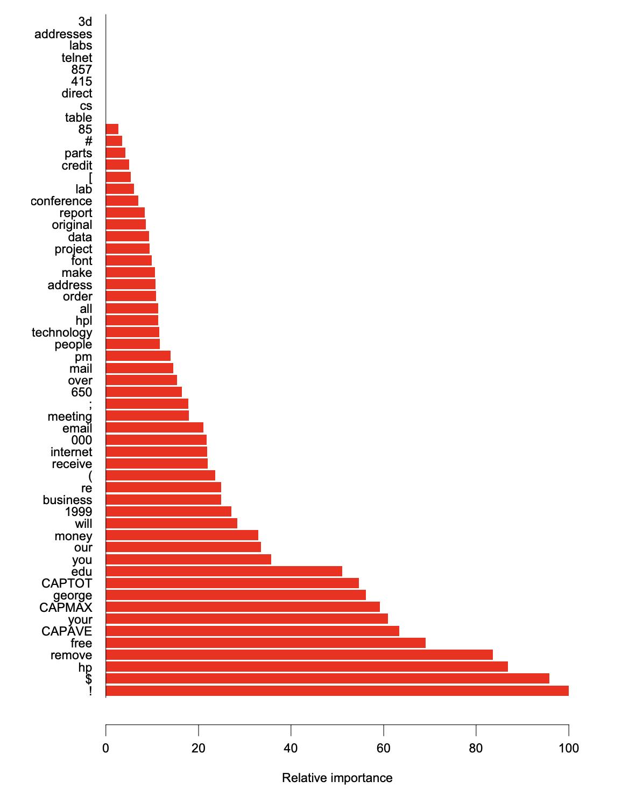
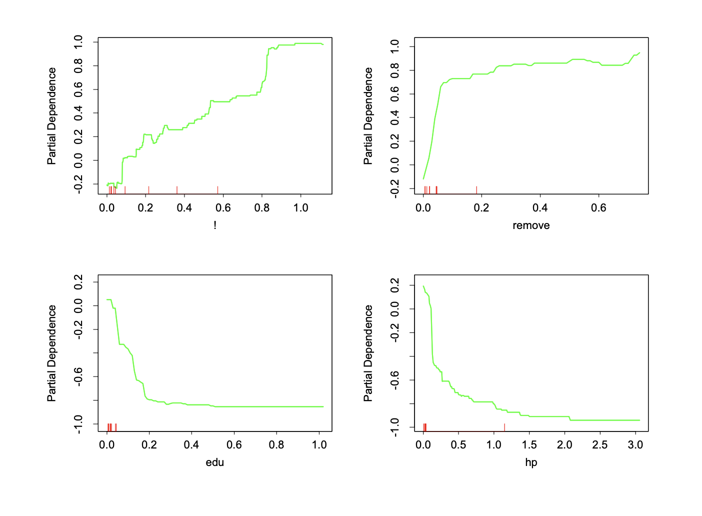

Lecture: Gradient Boosting Machine
Actuarial Data Science - Open Learning Resource
Recommended Reading
- An Introduction to Statistical Learning (ISLR): Review Section 8.2.3
- The Elements of Statistical Learning (ESL): Sections 10.1-10.3, 10.10.2, 10.10.3, 10.13
Learning Objectives
Gradient boosting machines (GBMs) are another key ensemble method that often deliver state-of-the-art predictive performance, but can feel like a “black box” at first. In this lecture, we break down the boosting idea into small steps so that you can see how GBMs are built up from simple components and how to control their complexity in practice.
Understand the motivation for boosting and the boosting technique
Perform predictive modelling using GBMs
Compare GBMs with other modelling techniques
Motivation
Review: Bagging and Random Forests

- Deep trees (fine subgroups) are more accurate but very noisy.
- Idea: fit many different trees and average their predictions.
- Grow trees on bootstrap subsamples of the data
- Randomly select variables/features as candidates for splits
Example: Bootstrap Trees

Motivation
- Bagging and Random Forests:
- They do not reduce the bias of the final predictions from a single tree.
- Each tree is built independently.
- Why not build new trees based on the information from previously built trees?
- i.e., build the trees sequentially and dependently
- For example, new trees can “focus” more on the data that previous trees do not predict well.
- Why cannot stronger trees be given more weight?
Model Averaging
CART models are simple but often produce noisy (bushy) or weak predictors.
- Bagging (Breiman 1996): Fit many large trees to bootstrap-resampled versions of the training data.
- Random Forests (Breiman 2001): A more advanced version of bagging.
- Boosting (Freund and Schapire 1997): Fit many large or small trees to reweighted versions of the training data.
In general: Boosting > Random Forests > Bagging > Single Tree
Adaptive Boosting (AdaBoost) and Stagewise Additive Modelling
AdaBoost
- Freund and Schapire (1997): Fit many large or small trees to reweighted versions of the training data. Classification is performed via a weighted majority vote.
- Given a vector of predictor variables X, a classifier G(X) produces a prediction taking one of the two values \{-1, 1\}.
- The purpose of boosting is to sequentially apply a weak classification algorithm to repeatedly modified versions of the data, thereby producing a sequence of weak classifiers G_m(x), m=1,2,\cdots, M.
- The predictions from all of them are then combined through a weighted majority vote to produce the final prediction: G(x)=\text{sign}\left(\sum_{m=1}^{M}\alpha_mG_m(x)\right).
Schematic of AdaBoost

How to Reweight the Data?
- Apply weights w_1, w_2, \cdots, w_N to each of the training observations (x_i, y_i), i = 1, 2, \cdots, N.
- Initially, at step m = 1, all weights are set to w_i=1/N.
- At step m, m = 2, 3, \cdots, M, the observations that were misclassified by the classifier G_{m-1}(x) at the previous step have their weights increased by a factor \exp(\alpha_m), whereas the weights of correctly classified observations are decreased.
- As iterations proceed, observations that are difficult to classify correctly receive increasing influence.
- Each successive classifier is thereby forced to concentrate on those training observations that were misclassified by previous ones.
AdaBoost.M1
- The first boosting algorithm; described as the “best off-the-shelf classifier in the world” (Breiman 1998).
- A new tree is built on reweighted (rather than bootstrapped) datasets.
- The weights of the trees are no longer equal.
AdaBoost Algorithm (M1)
Initialise observation weights:$ w_i = , i = 1, 2, , N.$
For m = 1, 2, \dots, M:
- Fit a classifier G_m(x) to the training data using weights w_i.
- Compute the weighted error: \text{err}_m = \frac{\sum_{i=1}^N w_i \, I(y_i \ne G_m(x_i))}{\sum_{i=1}^N w_i}.
- Compute the model weight:\alpha_m = \log\left(\frac{1 - \text{err}_m}{\text{err}_m}\right).
- Update the observation weights:w_i \leftarrow w_i \cdot \exp\left[\alpha_m \, I(y_i \ne G_m(x_i))\right], \quad i = 1, \dots, N.
Output the final classifier:G(x) = \text{sign}\left(\sum_{m=1}^M \alpha_m G_m(x)\right).
Adapted from The Elements of Statistical Learning (Hastie et al. 2009), Algorithm 10.1.
Example: Boosting Stumps

- A very weak classifier.
- A stump is a two-node tree with a single split.
- Boosting stumps works remarkably well.
Training Error vs. Testing error

- Boosting drives the training error (green) towards zero.
- Further iterations often continue to improve the test error (red).
- Does boosting overfit?
Boosting in Noisy Problems

- The test error increases (slowly) as boosting iterations proceed.
Additive Modelling
Boosting builds an additive model f(x) = \sum_{m=1}^M \beta_m \, b(x; \gamma_m), where b(x; \gamma_m) is a tree, and \gamma_m parametrises the splits.
We have seen this type of model in statistics before, for example:
- GAMs: f(x) = \sum_j f_j(x_j)
- Basis expansions: f(x) = \sum_{m=1}^M \theta_m h_m(x)
Traditionally, the parameters \theta_m are fitted jointly (e.g. least squares or maximum likelihood).
With boosting, the parameters (\beta_m, \gamma_m) are fitted in a stagewise fashion. This slows the process down and tends to overfit less quickly.
Forward Stagewise Additive Modeling
Algorithm:
Initialise f_0(x) = 0
For m = 1, \dots, M:
Fit a base learner by solving (\beta_m, \gamma_m) = \arg\min_{\beta, \gamma} \sum_{i=1}^N L\big(y_i, \, f_{m-1}(x_i) + \beta\, b(x_i; \gamma)\big)
Update the model f_m(x) = f_{m-1}(x) + \beta_m \, b(x; \gamma_m)
Adapted from The Elements of Statistical Learning (Hastie et al. 2009), Algorithm 10.2.
Forward Stagewise Additive Modeling (continued)
Sometimes step (b) is replaced by: f_m(x) = f_{m-1}(x) + \epsilon \, \beta_m \, b(x; \gamma_m)
- \epsilon is a shrinkage factor (learning rate)
- In the
gbmpackage in R, the default is \epsilon = 0.001
- Shrinkage slows down learning and typically improves performance
AdaBoost: Stagewise Modelling
- AdaBoost.M1 (Algorithm 10.1) is equivalent to forward stagewise additive modelling (Algorithm 10.2) using the exponential loss function.
- AdaBoost builds an additive logistic regression model (Sections 10.4–10.5 of The Elements of Statistical Learning provide the explanation and proof; these are not required in this course.] F(x) = \log \frac{\Pr(Y=1 \mid x)}{\Pr(Y=-1 \mid x)} = \sum_{m=1}^{M} \alpha_m f_m(x) by stagewise fitting using the exponential loss function L(y, F(x)) = \exp(-yF(x)).
- Instead of fitting trees to residuals, the special form of the exponential loss leads to fitting trees to weighted versions of the original data.
Gradient Boosting Machine
Gradient Boosting (Breiman 2001)
- A general boosting algorithm that works with a variety of loss functions. Models include regression, K-class classification, and risk modelling.
- Gradient Boosting builds additive tree models, for example, for representing the logits in logistic regression.
- Tree size is a parameter that determines the order of interaction. (stumps have no interactions)
- Gradient boosting inherits many desirable features of trees (variable selection, handling missing data, mixed predictors), and improves on their weaknesses, such as predictive performance.
- Implemented in the
gbmpackage in R, or via thecaretpackage withmethod = "gbm".
Performance Comparison

Analogy: Gradient Descent
- Before introducing gradient boosting, we briefly review its analogy: gradient descent — a basic numerical optimisation technique.
- Gradient descent iteratively solves \arg\min_{\mathbf{x}} \, \mathcal{L}(\mathbf{x}) as follows:
- Initialise i = 0, \mathbf{x}_0.
- Repeat until a stopping criterion is satisfied:
- \mathbf{x}_{i+1} = \mathbf{x}_i - \gamma \nabla_{\mathbf{x}} \mathcal{L}(\mathbf{x}_i), where \gamma > 0 is a small constant.
- i \leftarrow i + 1.
- Output \mathbf{x}_i.
Gradient Decent: The Effect of \gamma
- The step size |\mathbf{x}_{i+1} - \mathbf{x}_i| increases as \gamma increases.
- However, this does not mean the optimum is reached more quickly (the algorithm may oscillate).
- \mathbf{x}_i may even diverge if \gamma is too large.

Gradient Boosting Machine: Motivation and Ideas
Now let us discuss gradient boosting machines.
- We want to minimize \hat{\mathcal{R}} = \sum_{i=1}^N \mathcal{L}(y_i, f(x_i))..
- To do this, we can perform “functional” gradient descent with respect to f.
- A function f can be viewed as a (possibly infinite-dimensional) vector of values f(x) indexed by x. To perform gradient descent on f, we need the gradient \nabla_f \hat{\mathcal{R}} at every x.
- However, we can only compute the gradient at the observed points x_i, i = 1, \dots, N.
- To generalise to other x, we fit a predictor (e.g. a CART) to data (x_i,\hat{\mathcal{R}}(x_i)) to approximate the full gradient.
Gradient Boosting Machine: The Algorithm
- Set f_0 = 0, k = 0, and shrinkage parameter \gamma > 0.
- Repeat until a stopping criterion is satisfied:
- Compute the pseudo-residuals on the observations r_i = - \left. \frac{\partial \mathcal{L}(y_i, f(x_i))}{\partial f(x_i)} \right|_{f = f_k}, \quad i = 1, \dots, N.
- Fit a base learner b(x) to \{(x_i, r_i)\}_{i=1}^N, for example by minimising the sum-of-squared loss \sum_{i=1}^N \big(r_i - b(x_i)\big)^2.
- Update the model f_{k+1}(x) = f_k(x) + \gamma \, b(x).
- k \leftarrow k + 1.
- Output the gradient boosting predictor \hat{y} = f_k(x).
A Special Case: Gradient Boosting Regression with Squared Error Loss.
Let us consider a special case to better understand gradient boosting.
- In this case, the gradients at the observed data points are just the residuals from the current model fit. Hence, the new predictor is fitted to the residuals.
Least Squares Regression Boosting
- Set \hat{f}(x) = 0 and r_i = y_i for all i in the training set.
- For b = 1, 2, \cdots, B, repeat:
- Fit a tree \hat{f}^{\,b} with d splits (d + 1 terminal nodes) to the training data (X, r).
- Update \hat{f} by adding a shrunken version of the new tree: \hat{f}(x) \leftarrow \hat{f}(x) + \lambda \, \hat{f}^{\,b}(x)
- Update the residuals r_i \leftarrow r_i - \lambda \, \hat{f}^{\,b}(x_i)
- Output the boosted model: \hat{f}(x) = \sum_{b=1}^{B} \lambda \, \hat{f}^{\,b}(x)
Boosting Tuning Parameters
- The number of trees B
- May overfit if B is too large
- Use cross-validation to select B
- The shrinkage parameter \lambda
- A small positive number
- Controls the rate at which boosting learns (learning rate)
- Typical values are 0.01 or 0.001
- Slows down the rate of overfitting
- The number d of splits in each tree
- d=1 often works well; each tree is a stump
- More generally, d is the interaction depth and controls the interaction order of the boosted model, since d splits can involve at most d variables
AdaBoost vs Gradient Boosting
- AdaBoost uses the exponential loss and is essentially performing greedy stagewise forward basis expansion.
- Gradient boosting is similar to AdaBoost, with the gradient approximated by basis functions.
- Gradient boosting is not specific to a particular loss function.
When the Basis Functions Are CARTs
- All previous discussions apply to boosting with any weak learners.
- CARTs are commonly used as weak learners.
Ensemble Learning
Ensemble Learning
Ensemble Learning consists of two steps:
- Construction of a dictionary \mathcal{D} = \{T_1(X), T_2(X), \dots, T_M(X)\} of basis elements (weak learners) T_m(X).
- Fitting a model f(X) = \sum_{m=1}^M \alpha_m T_m(X).
Simple examples of ensembles
- Linear regression: The ensemble consists of the coordinate functions T_m(X)=X_m. The fitting is done by least squares.
- Ramdom forests: The ensemble consists of trees grown on bootstrap samples of the data, with additional randomisation at each split. The fitting simply averages the predictions.
- Gradient boosting: The ensemble is built in an adaptive (stagewise) fashion, and the final model is a weighted sum of the learners.
Interpretation: Variable Importance Plot
- Ranks the predictors according to their importance scores
- The importance score for a particular predictor is computed by totalling the reduction in node impurity due to that predictor, averaged over all the trees in the ensemble.
- In general, variables that are used to form splits more frequently and earlier in the trees lead to larger improvements in node purity and are therefore more important.
Variable Importance Plot: Email Spam Prediction

Interpretation: Partial Dependence Plot
- Can be used to interpret the results of any “black-box” learning method.
- Let X_S be a subset of predictors and X_C be its complement. The partial dependence of f(X) on X_S is defined as f_S(X_S) = \mathbb{E}_{X_C}\big[f(X_S, X_C)\big], which can be estimated by \bar{f}(X_S) = \frac{1}{N} \sum_{i=1}^{N} f(X_S, x_{iC}).
- Visualises the marginal effect of X_S on the average prediction of the target variable, after accounting for the effects of the other variables X_C.
Partial Dependence Plot: Email Spam Prediction

Post-processing by the Lasso
- Ensemble models are often large, involving thousands of small trees, and many of these trees can be very similar.
- Post-processing aims to select a smaller subset of trees and combine them more efficiently.
- This post-processing step can improve the performance of the original ensemble.
Fit the model f(X) = \sum_{m=1}^M \alpha_m T_m(X) in step (2) using Lasso regularization: \alpha(\lambda) = \arg\min_{\alpha} \sum_{i=1}^N \mathcal{L}\big(y_i, \alpha_0 + \sum_{m=1}^M \alpha_m T_m(x_i)\big) + \lambda \sum_{m=1}^M |\alpha_m|.
Ensemble Learning in Applications
- Ensemble learning methods such as Random Forest and Gradient Boosting Trees can be routinely used in many applications (often as “off-the-shelf” methods).
- Due to their ease of use and strong predictive performance, they are useful benchmark models. For example:
- If you are wondering whether a group of features can be used to predict another variable well, you can first use a Random Forest or a boosting method to explore this quickly.
- When you are trying to build a simple but interpretable model (e.g. a GLM), if the predictive performance is much worse than that of a Random Forest or boosting, it may indicate that the model is misspecified. For example, you may need to consider adding interaction terms or nonlinear effects.
Fun Facts
- Interesting observations:
- Predictive power: Neural Networks > Boosting > Random Forests
- Invention timeline: Neural networks were developed earlier than boosting, which was developed earlier than random forests
- Ease of use: Random forests > Boosting > Neural networks
- Takeaways:
- Simpler methods are not always easier to invent
- Predictive performance is not everything
- There is no free lunch.
Using R
Using R
randomForest: implementation of Leo Breiman’s algorithm.gbm: implementation of Friedman’s gradient boosting algorithm.glmnet: Lasso and elastic net (for post-processing ensembles).caret: a package that provides a unified interface for building predictive models. It includes tools for:- data splitting
- pre-processing
- feature selection
- model tuning using resampling
- variable importance estimation
- data splitting
pdp: partial dependence plots